在SMP系统中，进程调度器必须支持一下特性：
1、需要使用每个处理器的负载尽可能均衡；
2、可以设置进程的处理器亲和性（affinity），即允许进程在哪些处理器上执行；
3、可以把进程从一个处理器迁移到另一个处理器；
设置进程的处理器亲和性，就是把进程绑定到某些处理器上，只运行进程在某些处理器上执行，默认情况是进程可以在所有的处理器上执行。
进程的描述符增加了2个成员：
x1// kernel/linux/sched.h2
3struct task_struct{4 ....5 int nr_cpus_allowed;6 cpumask_t cpus_allowed;7 ....8}成员cpus_allowed保存运行的处理器掩码，成员nr_cpus_allowed保存运行的处理器数量。
内核提供了2个系统调用：
1、sched_setaffinity用来设置进程的处理器亲和性掩码；
11int sched_setaffinity(pit_t pid, size_t cpusetsize, cpu_set_t *mask);2、sched_getaffinity用来获取进程的处理器亲和性掩码；
11int sched_getaffinity(pit_t pid, size_t cpusetsize, cpu_set_t *mask);内核线程可以使用以下函数设置处理器亲和性掩码
1、kthread_bind：用来把一个刚刚查Un宫颈癌你的内核线程绑定到一个处理器上；
11void kthread_bind(struct task_struct *p, unsigned int cpu);2、set_cpus_allowed_ptr用来设置内核线程的处理器的亲和性掩码；
11int set_cpus_allowed_ptr(struct task_struct *p,const struct cpumask *new_mask);管理员可以啥用cpuset设置进程的处理器亲和性，cpuset用来通知进程在哪些处理器上执行，以及哪些内存节点分配内存。cpuset可以单独使用，也可以作为cgroup的一个资源控制器使用（cpuset合并到内核的时间比cgroup早，2.6.12版本引入cpuset，2.6.24版本引入了cgroup版本）。
cpuset在单独使用的时候，可以使用cpuset伪文件系统配置，配置步骤：
创建目录"/dev/cpuset"
11mkdir /dev/cpuset把cpuset伪文件系统挂载到目录"/dev/cpuset"下：
11mount -t cpuset none /dev/cpuset创建cpuset，假设名称是“abc”：
21cd /dev/cpuset2mkdir abc把处理器分配到cpuset，假设把处理器2和3分配到cpuset abc，需要在目录“/dev/cpuset/abc”下配置：
21cd abc2echo 2-3 > cpuset.cpus把线程关联到cpuset，假设把线程10关联到cpuset abc，需要在目录“dev/cpuset/abc”下配置
11echo 10 > tasks查看线程10关联的cpuset
11cat /proc/10/cpuset
cgroup已经从版本1演进到版本2，目前cgroupv2不支持cpuset控制器，使用cgrouv1的cpuset控制器的配置方法如下：
在目录“/sys/fs/cgroup”下挂载tmpfs文件系统
11mount -t tmpfs cgroup_root /sys/fs/cgroup在目录“/sys/fs/cgroup”下创建子目录cpuset
11mkdir /sys/fs/cgroup/cpuset把cgroup伪文件系统挂载到目录“/sys/fs/cgroup/cpuset”，把cpuset控制器关联到控制组层级树；
11mount -t cgroup -o cpuset cpuset /sys/fs/cgrpup/cpuset创建控制组，假设名称是“abc”；
21cd /sys/fs/cgroup/cpuset2mkdir abc把处理器分配到控制组，假设把处理器2和3分配到控制组abc，需要再目录“/sys/fs/cgrpup/cpuset/abc”下配置；
21cd abc2echo 2-3 > cpuset.cpus把线程加入到控制组，假设把线程20加入控制组abc；
11echo 20 > tasks也可以吧线程加入控制组，，指定线程组中任意一个线程的标识符，就会吧线程组的所有线程加入控制组，假设把线程10所属的线程组加入控制组abc
11echo 10 > cgroup.procs查看线程10关联的cpuset；
11cat /proc/10/cpuset
在SMP系统上，调度类增加一下方法：
121// 位置：kernel/sched/sched.h2
3struct sched_class{4 ...5 6 int (*select_task_rq)(struct task_struct *p, int task_cpu, int sd_flag, int flags);7 void (*migrate_task_rq)(struct task_struct *p);8 void (*task_worken)(struct rq *this_rq, struct task_struct *task);9 void (*set_cpus_allowed)(struct task_struct *p, const struct cpumask *newmask);10 11 ...12};select_task_rq方法用来为进程选择队列，实际上就是选择处理器；
migrate_task_rq方法用来在进程被迁移到新的处理器之前调用；
task_woken方法用来在进程被唤醒以后调用；
set_cpus_allowen方法用来在设置处理器亲和性的时候执行调度类的特殊处理；
以下两种情况，进程在内核和缓存中的数据是最少的，是有价值的实现负载均衡的机会。
调用fork或clone以创建新进程，如下图所示：
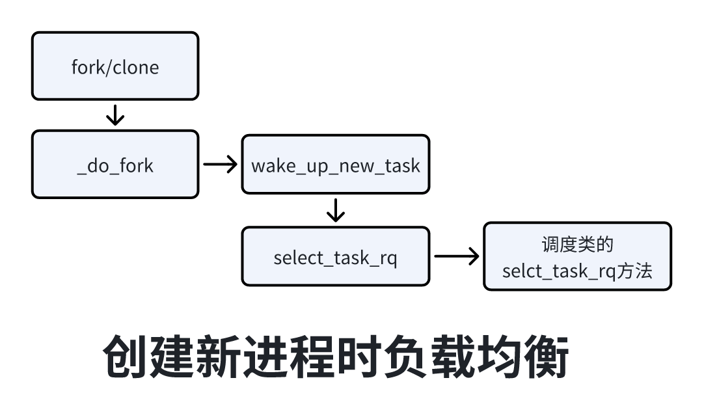
调用exec装载程序，如下图所示：
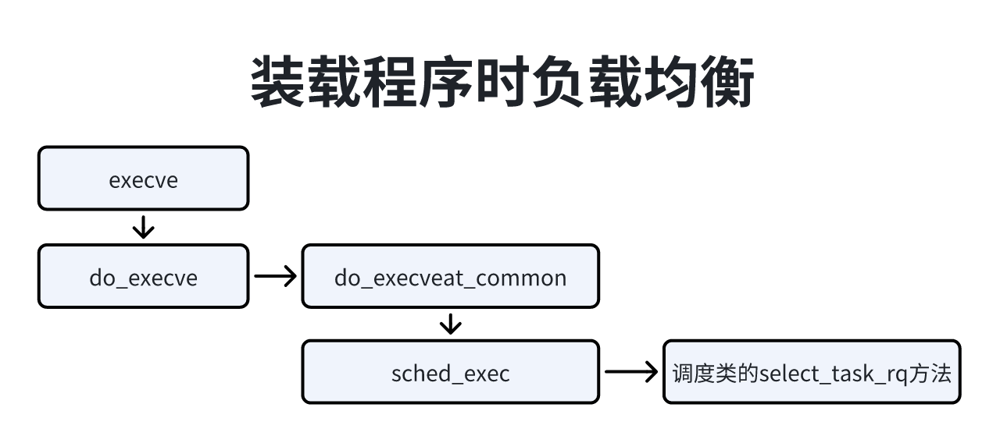
限期调度类的处理器负载均衡比较简单，如下图所示，调度类会选择下一个限期进程的时候，如果当前正在执行的进程时限期进程，将会试图无限期进程超载的处理器把限期进程拉过来。
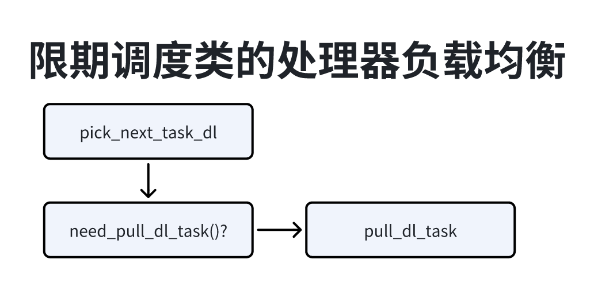
限期进程超载的定义如下：
限期运行队列至少有2个限期进程；
至少有一个限期进程绑定到多个处理器；
函数pull_dl_task负责从限期进程超载的处理器把限期进程拉过来，代码如下：
741// 位置：kernel/sched/deadline.c2
3static void pull_dl_task(struct rq *this_rq)4{5 int this_cpu = this_rq->cpu, cpu;6 struct task_struct *p;7 bool resched = false;8 struct rq *src_rq;9 u64 dmin = LONG_MAX;10
11 // 如果不存在限期进程超载的处理器，那么不需要处理12 if (likely(!dl_overloaded(this_rq)))13 return;14
15 16 smp_rmb();17 18 // 遍历每个处理器，针对每个限期进程超载的处理器t19 for_each_cpu(cpu, this_rq->rd->dlo_mask) {20 if (this_cpu == cpu)21 continue;22
23 src_rq = cpu_rq(cpu);24
25 // 如果当前处理器正在执行的限期进程的绝对限期小于处理器t的下一个限期进程的绝对限期，26 // 那么不需要拉限期进程过来27 if (this_rq->dl.dl_nr_running &&28 dl_time_before(this_rq->dl.earliest_dl.curr,29 src_rq->dl.earliest_dl.next))30 continue;31
32 33 double_lock_balance(this_rq, src_rq);34 35 // 如果处理器t上限期进程的数量小于2，那么不需要拉限期进程过来36 if (src_rq->dl.dl_nr_running <= 1)37 goto skip;38
39 // 在处理器t上选择一个绝对限期最小、处于就绪状态并且绑定的处理器集合40 // 包含当前处理器的限期进程41 p = pick_earliest_pushable_dl_task(src_rq, this_cpu);42
43 44 // 如果目标进程的绝对限期小于上一个拉过来的限期进程绝对限期，并且小于当前处理器正在执行45 // 的限期进程的绝对限期46 if (p && dl_time_before(p->dl.deadline, dmin) &&47 (!this_rq->dl.dl_nr_running ||48 dl_time_before(p->dl.deadline,49 this_rq->dl.earliest_dl.curr))) {50 WARN_ON(p == src_rq->curr);51 WARN_ON(!task_on_rq_queued(p));52 53 // 如果目标进程的绝对奇效预处理器t正在执行的限期进程的绝对期限，那么不要把目标进程拉过来 54 if (dl_time_before(p->dl.deadline,55 src_rq->curr->dl.deadline))56 goto skip;57
58 resched = true;59
60 // 当前处理器把目标进程从处理器t拉过来61 deactivate_task(src_rq, p, 0);62 set_task_cpu(p, this_cpu);63 activate_task(this_rq, p, 0);64 dmin = p->dl.deadline;65
66 67 }68skip:69 double_unlock_balance(this_rq, src_rq);70 }71
72 if (resched)73 resched_curr(this_rq);74}实时调度类的处理器负载均衡和限期调度类相似，如下图所示，调度器选择下一个实时进程时，如果当前处理器的实时运行队列中的进程的最高调度优先级比当前正在执行的进程调度优先级低，将会试图从实时进程超载的处理器把可推送进程拉过来。
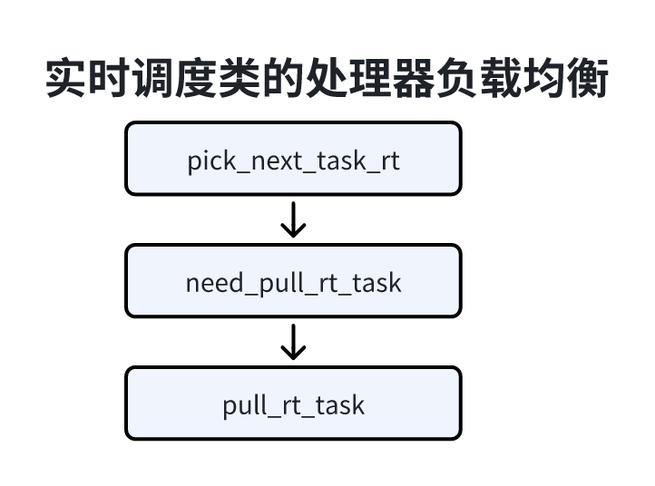
实时进程超载定义：
1、实时运行队列至少有2个实时进程；
2、至少有1个可推送实时进程；
可推送实时进程时指绑定到多个处理器的实时进程，可以在处理器之间迁移。
函数pull_rt_task负责从实时进程超载的处理器把可推送实时进程拉过来，代码如下；
581// 位置：kernel/sched/rt.c2
3static void pull_rt_task(struct rq *this_rq)4{5 int this_cpu = this_rq->cpu, cpu;6 bool resched = false;7 struct task_struct *p;8 struct rq *src_rq;9
10 // 如果不存在实时进程超载的处理器，那么不需要处理11 if (likely(!rt_overloaded(this_rq)))12 return;13
14
15 ....16
17 // 循环处理每个处理器超载的处理器t 18 for_each_cpu(cpu, this_rq->rd->rto_mask) {19 if (this_cpu == cpu)20 continue;21
22 src_rq = cpu_rq(cpu);23
24 // 如果处理器t上可推送实时进程的第二高调度优先级比当前处理器上的实时进程最高调度优先级25 // 高（数值越大，优先级越低），那么可以考虑拉实时进程过来 否则不考虑26 if (src_rq->rt.highest_prio.next >=27 this_rq->rt.highest_prio.curr)28 continue;29
30 double_lock_balance(this_rq, src_rq);31
32 // 处理器t上选择一个调度优先级最高、处于就绪状态并且绑定的处理器集合包含当前处理器的实时进程33 p = pick_highest_pushable_task(src_rq, this_cpu);34
35 // 如果目标进程调度优先级比当前处理器上实时进程的最高调度优先级高，36 if (p && (p->prio < this_rq->rt.highest_prio.curr)) {37 WARN_ON(p == src_rq->curr);38 WARN_ON(!task_on_rq_queued(p));39 // 如果目标进程的调度优先级比处理器t正在执行的进程的调度优先级高，那么不需要把目标进程拉过来，40 // 这种情况下目标进程正在被唤醒还没机会调度41 if (p->prio < src_rq->curr->prio)42 goto skip;43
44 resched = true;45
46 // 当前处理器把目标进程拉过来47 deactivate_task(src_rq, p, 0);48 set_task_cpu(p, this_cpu);49 activate_task(this_rq, p, 0);50
51 }52skip:53 double_unlock_balance(this_rq, src_rq);54 }55
56 if (resched)57 resched_curr(this_rq);58}目标多处理器系统有2种体系结构：
1、非一直内存访问（Non-Uniform Memory Access, NUMA）：就是值内存被划分成多个内存节点的多处理器系统，访问一个内存节点话费的时间取决于处理器和内存节点的距离。每个处理器有一个本地内存节点，处理器访问本地内存节点的速度比访问其他内存节点的速度快。
2、对称多处理器（Symmetric Multi_processor ，SMP）：就是一致内存访问（Uniform Memory Access UMA），所有处理器访问内存花费的时间相同，每个处理器的地位是平等的，仅在内核初始化的时候不平等：”0号处理器座位引导处理器负责初始化内核，其他处理器等待内核初始化完成“。
应用：在实际应用中可以采用混合体系结构，在NUMA接地啊内部使用SMP体系结构。
处理器内部的拓扑如下：
1、核（core）：一个处理器包含多个核，每个核有独立的一级缓存，所有核共享二级缓存。
2、硬件线程：也叫逻辑处理器或虚拟处理器，一个处理器或者核包含多个硬件线程，硬件线程共享一级缓存和二级缓存，MIP处理器的叫法是同步多线程（Simultaneous Multi-Threading， SMT），英特尔对他的交付是超线程。
当一个进程在不同的处理器拓扑层次上迁移的时候，付出的代价是不同的。
1、如果从同一个核的一个硬件线程到另一个硬件线程，进程在一级缓存和二级缓存中的数据是可以继续使用。
2、如果从同一个处理器的一个核迁移到另一个核，进程在源核的一级缓存中的数据是失效的，二级缓存中的数据是可以继续使用的。
3、如果从同一个NUMA节点的一个处理器迁移到另一个处理器，进程在源处理器的一级和二级缓存都会失效。
4、如果从一个NUMA节点迁移到两个NUMA节点，进程的源处理器的一级和二级缓存都会失效，并且内存变慢。
结论，处理器拓扑层次越高，迁移进程付出的代价越大。
软件看到的处理器是最底层的处理器。
1、如果处理器支持硬件线程，那么最底层的处理器是硬件线程。
2、如果处理器不支持硬件线程，支持多核，那么最底层的处理器就是核。
3、如果处理器不支持多核和硬件线程，那么最底层的就是物理处理器。
基于支持多核和硬件线程展开讨论。
内核按照哦处理器拓扑层次的划分调度域层次，每个调度域包含多个调度组，调度组和调度关系如下：
1、每个调度组的处理器集合是调度域的处理器集合的子集；
2、所有调度组的处理器集合是并集是调度域处理器的集合；
3、不同调度组的处理器集合是没有交集的；
如果我们把硬件线程、核、物理处理器和NUMA节点都理解成对应层次的处理器，那么可以认为：调度域对应更高层次的一个处理器，调度组对应本层次的一个处理器，一个硬件线程对应一个核，每个调度组对应的一个硬件线程；一个核调度域对应一个物理处理器，每个调度组对应物理处理器的一个核；一个处理器调度域对应一个NUMA节点，每个调度组对应NUMA节点的一个处理器。
举例说明：假设系统只有一个处理器，处理器包含两个核，每个核包含两个硬件线程，软件看到的处理器是硬件线程，即处理器0-3，调度域层次数如下图所示：
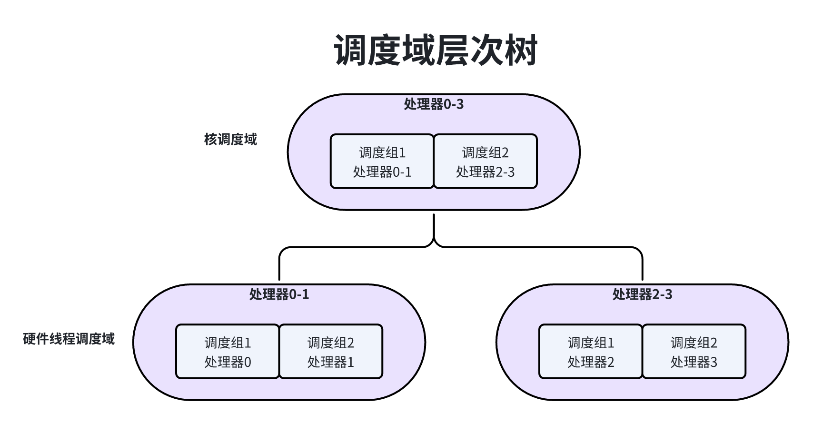
1、两个硬件线程调度域：一个硬件线程调度域包含处理器0-1，分为2个调度组，调度组1包含处理器0，调度组2包含处理器1；另一个硬件线程调度域包含处理器2-3，分为两个调度组，调度组1包含处理器2，调度组2包含处理器3；
2、一个核调度域包含处理器0~3分为2个调度组，调度组1包含处理器0-1，调度组2包含处理器2-3。
考虑到NUMA节点之间的距离不同，把NUMA节点调度域划分多个层次，算是是：把节点0到其他节点之间的距离按照从小到大排序，去掉重复数值，如果有n个巨鹿值，纪委数组q[n]，那么划分n个层次，层次i（0<=i<n）的标准是节点之间的距离小于或等于d[i]。
算法假设：节点0和节j的距离在任意节点i到节点j的距离中最大的。
例子1：假设系统划分为3个NUMA节点，节点编号是0-2，节点0到节点1的距离是100，节点0到节点2的距离是200那么划分2个NUMA节点调度域层次。
1、层次0的标准是节点之间的距离小于等于100；
2、层次1的标准是节点之间的距离小于等于200；
例子2：以例子1基础上，每个NUMA节点包含2个处理器，每个处理器包含2个核，每个核包含2个硬件线程，总共24个硬件线程，软件看到处理器是最底层的硬件线程，即24个处理器，硬件线程0和1看到调度域层次树如下图所示：
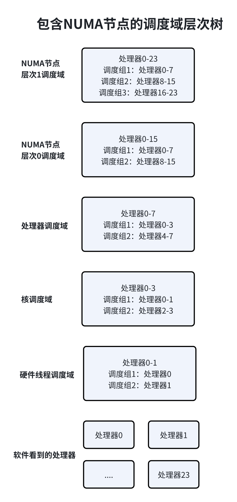
把运行历史划分成近似1ms的片段，每个片段称为一个周期，为了方便执行移位操作，把一个周期定义为1024微妙，一个周期的加权负载：load = 周期长度 * 处理器频率 * 公平运行队列权重。
公平运行队列的加权负载总和：load_sum = load + (y * load_sum)，其中y是衰减系数y32 = 0.5。
把公式展开以后如下所示：
loadi：表示i个周期以前的周期负载。
加权时间总和：time_sum = 周期长度 + (y * time_sum)；
加权平均负载：load_avg = load_sum / time_sum；
基于上面的公平运行队列的加权平均负载，计算5种处理器负载，计算公式如下：
其中i的取值是0-4，load_avg是 根任务组的公平运行队列的加权平均负载。
5种负载的区别是，历史负载和当前的负载的比例不同，i越大，历史负载占的比例越大，处理器曲线越平滑。在处理器不空闲、即将空闲和空闲等不同情况下实现负载均衡时，使用不同的处理器负载。
在以下情况下，从进程到根任务计算每层公平运行队列的平均负载均衡。
周期性计算（函数task_tick_fair）；
进程加入公平运行队列（函数 enqueue_task_fair）；
进程退出公平 运行队列（函数 dequeue_task_fair）；
公平运行队列中描述负载总和与平均负载成员如下：
81// 位置：kernel/sched/sched.h2
3struct cfs_rq{4 ...5 u64 runable_load_sum;6 unsigned long runnable_load;7 ...8}如下图所示，如果当前正在执行的进程属于公平调度类，那么周期调度函数scheduler_tick()将会调用公平调度类的task_tick方法，从当前进程和根任务组，计算每层公平运行队列的平均负载均衡。
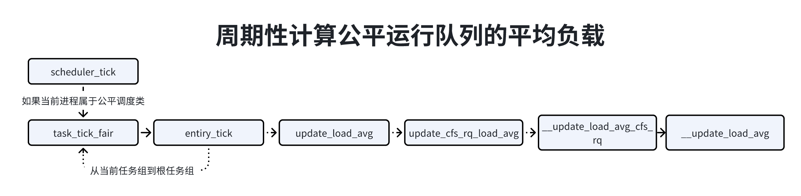
函数__update_load_avg计算公平运行队列的平均负载均衡，代码如下：
441// 位置：kernel/sched.fair.c2
3static __always_inline int4___update_load_avg(u64 now, int cpu, struct sched_avg *sa,5 unsigned long weight, int running, struct cfs_rq *cfs_rq)6{7 u64 delta;8
9 delta = now - sa->last_update_time;10 /*11 * 这应该只会在时间倒流时法神，12 * 不幸的是，在初始化调度时钟，换用STC（time stamp conter）确实也会发生13 */14 if ((s64)delta < 0) {15 sa->last_update_time = now;16 return 0;17 }18
19 // 把时间间隔从纳秒转换成微妙，为了快速计算，不是除以1000，而是右移10位，相当于20 // 除以1024，因为操作效率比除法高，1024纳秒接近1微妙21 delta >>= 10;22 if (!delta)23 return 0;24
25 // 记录计算平均负载的时间26 sa->last_update_time += delta << 10;27
28 29 // 调用函数accumulate_sum来计算负载总和，如果时间间隔至少包含一个完整周期，那么函数30 // accumulate_sum返回值31 if (!accumulate_sum(delta, cpu, sa, weight, running, cfs_rq))32 return 0;33
34 // 如果经过至少一个完整周期，那么计算负载平均值，把加权负载总和除以加权时间总和，加权时间总和是35 // 取345个周期的加权时间总和 是一个常量36 sa->load_avg = div_u64(sa->load_sum, LOAD_AVG_MAX);37 if (cfs_rq) {38 cfs_rq->runnable_load_avg =39 div_u64(cfs_rq->runnable_load_sum, LOAD_AVG_MAX);40 }41 sa->util_avg = sa->util_sum / LOAD_AVG_MAX;42
43 return 1;44}函数accumulate_sum负责计算负责总和，代码如下：
591// 位置：kernel/sched/fair.c2
3static __always_inline u324accumulate_sum(u64 delta, int cpu, struct sched_avg *sa,5 unsigned long weight, int running, struct cfs_rq *cfs_rq)6{7 unsigned long scale_freq, scale_cpu;8 u32 contrib = (u32)delta; /* p == 0 -> delta < 1024 */9 u64 periods;10
11 // 获取处理器频率12 scale_freq = arch_scale_freq_capacity(NULL, cpu);13 scale_cpu = arch_scale_cpu_capacity(NULL, cpu);14
15 // 把时间间隔加上period_contrib，16 // period_contrib是上次计算平均负载均衡最后一个不完整周期走过的时间17 delta += sa->period_contrib;18 // 把时间间隔除以周期长度得到周期数量n，一个周期时1024微妙，约1毫秒19 periods = delta / 1024; /* A period is 1024us (~1ms) */20
21 /*22 * 第1步：如果经过至少一个周期，那么衰减旧的负载总和23 */24 if (periods) {25 sa->load_sum = decay_load(sa->load_sum, periods);26 // 针对公平运行队列，把旧的负载总和乘以衰减系数的n次幂27 if (cfs_rq) {28 cfs_rq->runnable_load_sum =29 decay_load(cfs_rq->runnable_load_sum, periods);30 }31 sa->util_sum = decay_load((u64)(sa->util_sum), periods);32
33 /*34 * 第2步，当前周期可能没有结束，算出已经经历的时间长度35 */36 delta %= 1024;37 38 // 计算从上次负载总和到现在这段时间的负载增量39 contrib = __accumulate_pelt_segments(periods,40 1024 - sa->period_contrib, delta);41 }42 43 /// 记录当前周期已经经历的时间长度44 sa->period_contrib = delta;45
46 // 负载增量乘以已经经历的时间长度47 contrib = cap_scale(contrib, scale_freq);48 if (weight) {49 sa->load_sum += weight * contrib;50 // 针对公平运行队列，把负载增量乘以权重，然后把负载增量加到负载总和51 if (cfs_rq)52 cfs_rq->runnable_load_sum += weight * contrib;53 }54 if (running)55 sa->util_sum += contrib * scale_cpu;56
57 return periods;58}59
__accumulate_pelt_segments负责 计算上次到现在期间内产生的负载增量，有3个参数，d1是上次计算负载总和的时间最后一个周期剩余部分，periods是完整的周期数量，d3是当前周期已经经历的时间长度。
291// 位置 kernel/sched/fair.c2
3static u32 __accumulate_pelt_segments(u64 periods, u32 d1, u32 d3)4{5 // 计算当前周期已经经历的时间长度的负载增量6 u32 c1, c2, c3 = d3; /* y^0 == 1 */7
8 /*9 * c1 = d1 y^p10 */11 // 计算上次负载总和的时间最后一个周期的剩余部分的负载增量12 c1 = decay_load((u64)d1, periods);13
14 /*15 * p-116 * c2 = 1024 \Sum y^n17 * n=118 *19 * inf inf20 * = 1024 ( \Sum y^n - \Sum y^n - y^0 )21 * n=0 n=p22 */23 // 计算periods个完整的周期的负载增量24 c2 = LOAD_AVG_MAX - decay_load(LOAD_AVG_MAX, periods) - 1024;25
26 // 3部分相加27 return c1 + c2 + c3;28}29
运行队列中描述处理器的负载的成员如下：
91// 位置：kernel/sched/sched.h2
3struct rq{4 5 ...6 7 unsigned long cpu_load[CPUI_LOAD_MAX];8 ...9}如下图所示，周期调度函数scheduler_tick()调用函数cpu_load_update_active()，计算处理器负载。
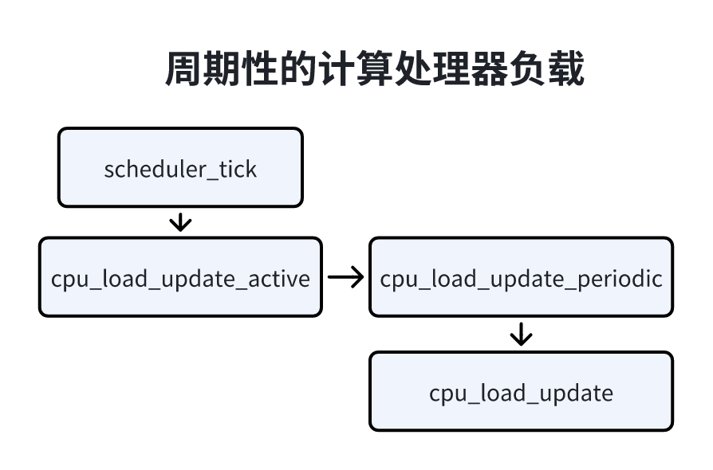
函数cpu_load_update_active负责以根任务组的公平运行队列的平均负载值为基础计算处理器负载，参数this_load是公平运行队列的平均负载值，代码如下：
181// 位置： kernel/sched/fair.c2
3static void cpu_load_update(struct rq *this_rq, unsigned long this_load, unsigned long pending_updates)4{5 ...6 this_rq->cpu_load[0] = this_load;7 for(i=1, scale=2; i<CPU_LOAD_IDX_MAX; i++; scale +=scale){8 unsigned long old_load, new_load;9 old_load = this_rq -> cpu_load[i];10 new_load = this_load;11 12 if(new_load > old_load)13 new_load += scale -1;14 15 this_rq -> cpu_load[i] = (old_load * (scale - 1) + new_load) >> i;16 }17 ...18}调度器在以下几种情况下会执行处理器负载均衡：
1、周期性的主动负载均衡，时间间隔为1分钟；
2、除空闲线程外没有其他可运行的进程，处理器即将空闲；
如下图所示，周期调度函数scheduler_tick()判断有没有达到执行负载均衡的时间点，达到时间点，就会触发调度软中断吗，调度软中断从处理器的基本调度域到顶层调度域执行负载均衡，在每层调度域，函数load_balance负责执行负载均衡。
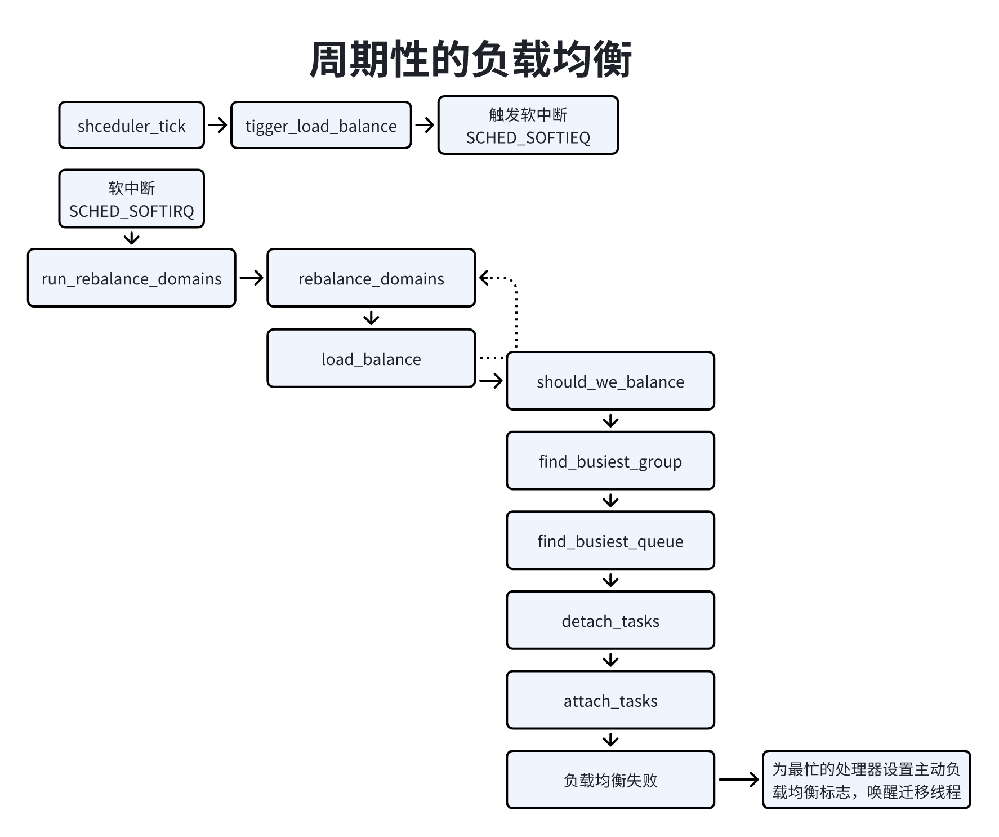
1）判断当前处理器是否应该执行负载均衡，有3种情况运行当前处理器执行负载均衡：
a、当处理器即将空闲；
b、第一个调度组的第一个空闲处理器；
c、第一个调度组的第一个处理器；
2）找出最忙的调度组
3）从最忙的调度组中找出最忙的处理器；
4）从最忙的处理器中迁移若干个进程到当前处理器；
5）如果负载均衡失败，即没有迁移一个进程，那么为最忙的处理器设置主动负载均衡标志，记录当前处理器作为迁移目标，向最忙的处理器的停机工作队列添加一个工作，工作函数是active_load_balance_cpu_stop，唤醒最忙处理器的迁移线程。迁移线程将会从停机工作队列取出工作，执行主动的负载均衡。
当前处理器所属的调度组称为本地调度组，需要从除了本地调度组以外的调度组中找出最忙的调度组。
计算每个调度组的负载和平均负载，调度组的负载是属于调度组中每个处理器的负载的总和，上面说了5种处理器负载，根据当前处理器不空闲、即将空闲或空闲选择不同的处理器负载种类，并且 采用保守策略：“对于本地调度组，取处理器负载和公平运行队列的加权平均负载最大值；对于其他调度组取两者的较小值”，调度组的平均股灾 = 调度组的负载总和 / 调度组的所有处理器的能力总和。
从除了本地调度组以外的调度组找出负载最大的调度组，即最忙的调度组。
当前处理器空闲情况：如果最忙调度组没有超载，或者本地调度组的空闲处理器数量小于等于“最忙调度组的空闲处理器数量 + 1”，那么不需要执行负载均衡。
最后计算一个不均衡值，用来控制最忙调度组迁移多少个进程到本地调度组，不均衡值是以下三者的最小值：
1）（最忙调度组的平均负载 - 所有调度组的平均负载） * 最忙调度组的能力值
2）最忙调度组超过处理能力的负载 * 最忙调度组的能力值
3）（所有调度组的平均负载 - 本地调度组的平均负载） * 本地调度组的能力值
每个处理器都有一个迁移线程，线程名称是“migration/<cpu_id>”属于停机调度类，可以抢占所有其他进程，迁移线程作用：
1）调度器发出迁移请求，迁移线程处理迁移请求，把进程迁移到目标处理器；
2）执行主动负载均衡；
如下图所示，每个处理器有一个停机工作管理器，成员thread指向迁移线程的进程描述符，成员works是停机工作队列的头节点，每个节点是一个停机工作，数据类型是结构体cpu_stop_work。内核提供了2个添加停机工作的函数。
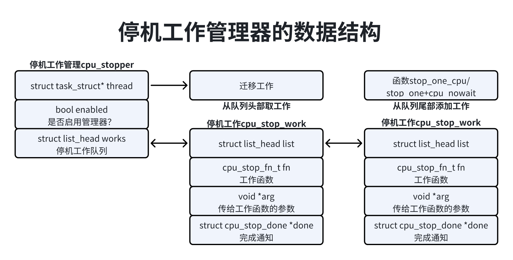
1）stop_one_cpu：用来指定处理器添加停机工作，并且等待停机工作完成；
11int stop_one_cpu(unsigned int cpu, cou_stop_fn_t fn, void *arg);2）stop_one_cpu_nowait：用来执行处理器添加停机工作，但是不等待停机工作完成；
21bool stop_one_cpu_nowait(unsigned int cpu, cou_stop_fn_t fn, 2 void *arg, struct cpu_stop_work *work_buf);如下图所示，迁移线程的线程函数smpboot_thread_fn，如果当前处理器停机工作队列不是空的，重复执行下面的步骤：
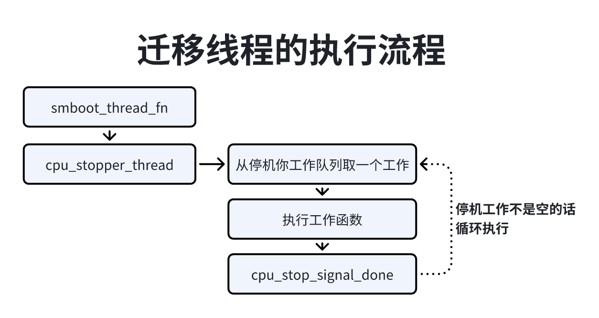
迁移线程执行流程说明：
1、从停机工作列中取出一个工作；
2、执行工作函数；
3、如果发起请求的进程正在等待，那么发送处理完成通知；
下图所示，系统调用sched_setaffimity来设置进程的处理器亲和性时，假设进程在处理器n上，当进程正在执行或者被唤醒，调度器就会向处理器n的迁移线程发出迁移请求：向处理器n的停机工作队列添加一个工作，工作函数是migration_cpu_stop，然后唤醒处理器n的迁移线程，等待迁移线程处理完成迁移请求。
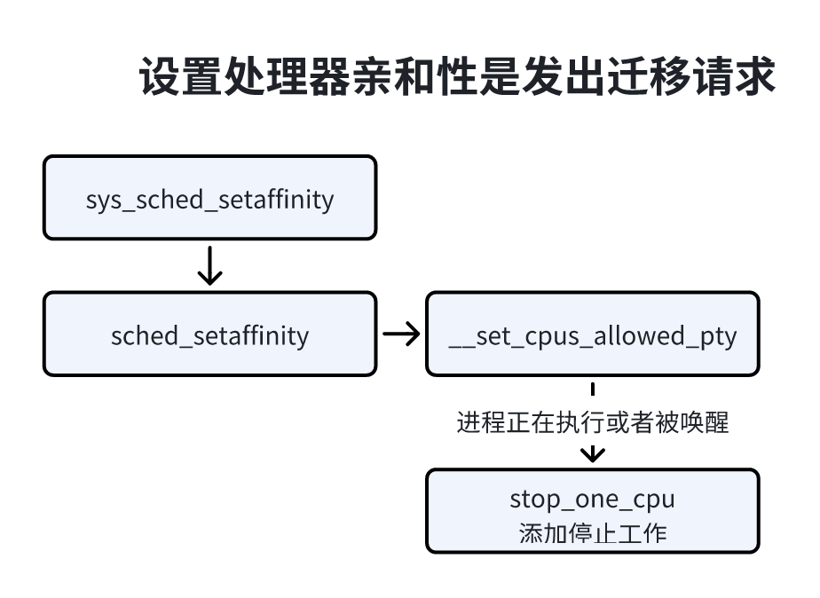
函数migration_cpu_stop负责把进程从当前处理器迁移到目标处理器，参数类型是结构体migtation_arg，成员task需要迁移的过程，成员dest_cpu是目标处理器，代码如下：
341// 位置：kernel/sched/core.c2
3static int migration_cpu(void *data)4{5 struct migration_arg *arg = data;6 struct task_struct *p = arg->task;7 struct rq *rq = this_rq();8 struct rq_flags rf;9
10 local_irq_disable();11
12 sched_ttwu_pending();13
14 raw_spin_lock(&p->pi_lock);15 rq_lock(rq, &rf);16
17 // 检查进程P是否在当前处理器上18 if (task_rq(p) == rq) {19 // 如果进程p在当前处理器的运行队列中，需要把进程p迁移到目标处理器，从当前处理器的运行队列中删除20 // 添加到目标处理器运行队列中21 if (task_on_rq_queued(p))22 rq = __migrate_task(rq, &rf, p, arg->dest_cpu);23 24 // 如果进程p正在睡眠，那么使用进程描述符成员waken_cpu记录目标处理器，等到唤醒进程p的时候25 // 迁移到目标处理器26 else27 p->wake_cpu = arg->dest_cpu;28 }29 rq_unlock(rq, &rf);30 raw_spin_unlock(&p->pi_lock);31
32 local_irq_enable();33 return 0;34}公平调度类执行处理器负载均衡失败的时候，为最忙处理器设置上主动负载均衡的标志，唤醒最忙的处理器的迁移进程。函数active_load_balance_cpu_stop负责执行主动负载均衡，执行流程如下图所示，先运行队列是否设置了主动负载均衡的标志，设置的话从当前处理器的运行队列中选择一个公平调度类的进程，清除运行队列的主动负载均衡标志，把进程迁移到目标进程。
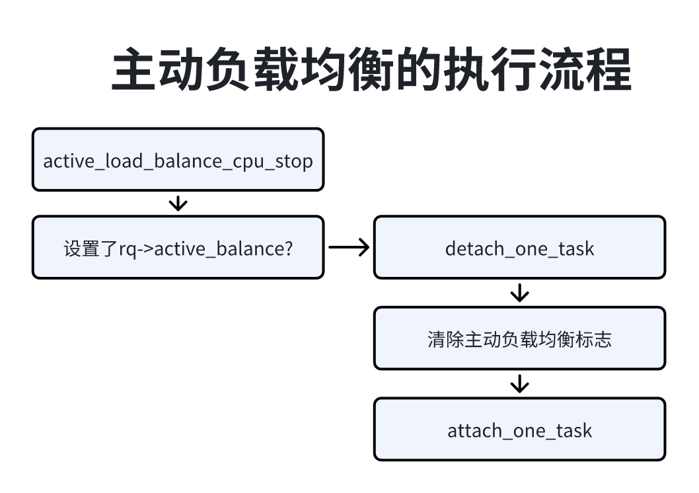
有时我们想要把一部分处理器作为专用处理器，比如在网络设备上为提高转发速度，让一部分处理器专门复杂转发报文，实现方式是在引导内核时相内核传递参数"isolcpus=<CPU列表>"，隔离这些处理器，被隔离的处理器不会参与SMP负载均衡，如果没有吧进程绑定到被隔离的处理器，那么不会有进程在被隔离的处理器上执行。
CPU罗列标有下面3中格式：
1）
2）按升序排列的范围：
3）混合格式：
举例子说明，“isolcpus=1,2,10-20”表示隔离处理器1、2和10-20。
一个对象操作另一个对象时通常要安全性检查，例如进程操作一个文件，要检查进程是否有哦权限操作该文件，一个对象访问另一个对象，前者称为主题，后者称为客体。
证书是访问对象所需权限的抽象，主题提供自己权限的证书，客体提供访问自己所需权限的证书，根据主课提提公的证书和操作安全性检查。
证书用数据结构cred表示，进程描述符有2个成员和证书有关：
91// include/linux/sched.h2
3struct task_struct{4 ...5 // 主题和真实客体进程证书6 const struct cred __rcu *real_cred;7 const struct cred __rcu *cred;8 ...9}成员real_cred指向主题和真实客体的证书；cred指向有效客体证书，一般情况下cred和real_cred是相同的证书，但是cred可能会被淋湿修改为指向另一个证书。
证书包含的用户标识符和组标识符如表所示：
| 结构体cred的成员 | 说明 |
|---|---|
| uid 和 gid | 真实用户标识符和真实组标识符 |
| suid 和 sgid | 保存用户标识符和保存组标识符 |
| euid 和 egid | 有效用户标识符和有效组标识符 |
| fsuid 和 fsgid | 文件系统用户标识符和文件系统组标识符 |
| group_info | 附加组（supplementary groups） |
真实用户标识符和真实组标识符：表示了进程属于哪一个用户和哪一个组，即登录时使用的用户标识符和用户所属的第一个组标识符。
有效用户标识符和有效组标识符：用来确定进程是否有权限访问共享资源，和大多数UNIX系统不同的是，访问文件时Linux使用文件系统标识符和文件系统组标识符。
通常情况下，有效用户标识符和真实用户标识符相同，有效组标识符和真实组标识符相同。但是，如果可执行文件设置可set-use-ID模式位，那么创建进程的时候，进程的有效用户标识符等于可执行文件的用户标识符；如果为可执行文件设置了set-group-ID模式位，那么在创建进程的时候，进程的有效组标识符等于可执行文件的组标识符。
保存用户标识符和保存组标识符：用来保存可执行文件的用户标识符和组标识符。如果为可执行文件设置了set-user-ID模式位，进程的有效用户标识符可以在真实用户标识符和保存用户标识符之间切换；如果可执行文件设置了set-user-ID模式位，进程的有效组标识符可以在真实用户标识符和保存组标识符之间切换。
文件系统用户标识符和文件系统组标识符：他们是Linux私有的，和附加组标识符一起用来确定进程是否有权限访问文件。通常情况下，文件系统用户标识符和有效用户标识符相同，文件系统组和有效组标识符相同。进程可以调用setfsuid以设置和有效用户标识符不同的文件系统用户标识符，调用setsgid以设置和有效组标识符不同的文件系统组标识符。
附加组标识符（supplementary group IDs）：访问文件和其他共享资源时用来检查权限的附加组标识符的集合。进程可以调用getgroups以读取附加组标识符的集合，可以调用setgroups以修改附加组标识符的集合。